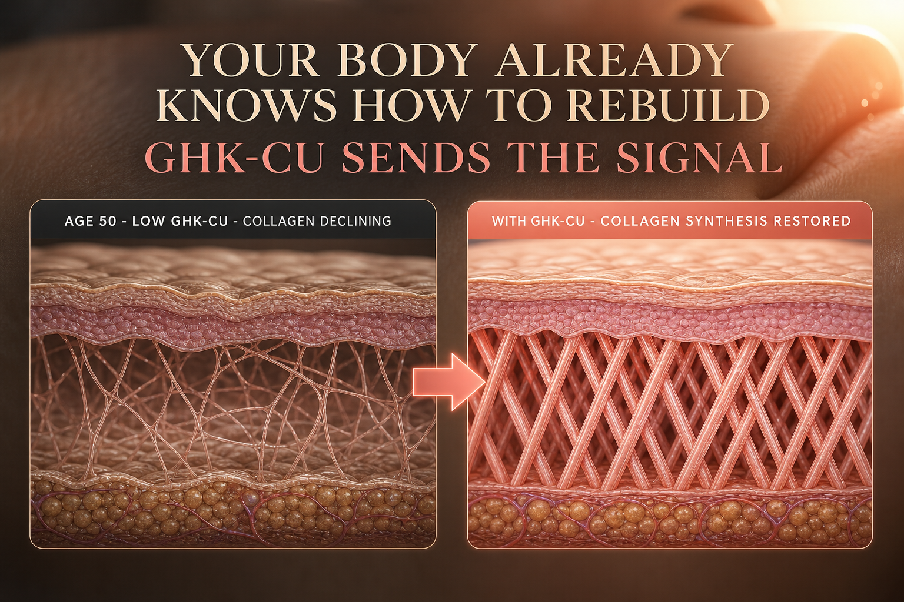

What GHK-Cu Is
GHK-Cu (glycyl-L-histidyl-L-lysine copper) is a tripeptide - just three amino acids - bound to a copper ion. It was first identified in human plasma in 1973 by Dr. Loren Pickart at the University of California, San Francisco. Your body produces GHK-Cu naturally. It circulates in your blood, saliva, and urine, and plays a central role in tissue repair, collagen production, and wound healing.
The critical detail is what happens to GHK-Cu levels with age. Plasma levels sit around 200 nanograms per milliliter in your 20s and fall to approximately 80 nanograms per milliliter by age 60 - a reduction of about 60 percent. This decline closely tracks with the visible and functional signs of aging in skin, hair, and connective tissue that most people notice in their 40s and 50s.
Unlike most peptides in this category, GHK-Cu has a significant body of topical research and even mainstream dermatology acknowledgment. It is used in high-end skincare serums and has been studied in controlled wound healing trials. The injectable form delivers the compound systemically and at higher effective concentrations than topical application can achieve, reaching tissue beyond the skin surface.
GHK-Cu injectable was removed from the FDA Category 2 bulk substances list in 2026, with a PCAC consultation planned. It remains available as a research chemical. Unlike some other peptides, GHK-Cu has no WADA prohibition because it is not performance-enhancing for competitive athletes.
Plain English Version
The Building's Renovation Crew
After years of weather, use, and wear, a building starts to show its age. The paint fades. The walls crack. The floors lose their finish. The structure is still sound, but the surfaces that people see and touch every day have degraded - not because of a single catastrophic event, but because the ongoing maintenance crew gradually got smaller and slower.
Your skin, hair, and connective tissue work the same way. GHK-Cu is your body's renovation crew. It regulates the genes responsible for producing collagen, elastin, and glycosaminoglycans - the structural proteins that give skin its firmness, hair its density, and tissue its resilience. When you are young and GHK-Cu levels are high, the renovation crew is large and active. Things get repaired faster than they degrade.
By your 40s, the crew has shrunk by nearly half. Collagen production slows. Existing collagen becomes less organized. Skin thins. Hair follicles miniaturize. Wound healing takes longer. Not because your body forgot how to renovate - but because the signal telling it to do so is no longer arriving at the same strength it used to.
Injectable GHK-Cu is the signal, delivered directly. It does not add synthetic collagen to your skin. It tells your cells to produce more of their own - and to better organize what they produce. The renovation crew shows up again at full strength.
One sentence: GHK-Cu is your body's own tissue renovation signal - levels fall by 60% between your 20s and 60s, and supplementing it tells your cells to rebuild what age has slowed down.
How To Picture It

How It Works
GHK-Cu operates through multiple parallel mechanisms unlike compounds that bind to a single receptor. It modulates gene expression via copper-responsive transcription factors, interacts directly with TGF-beta pathways that regulate collagen synthesis, delivers copper to metalloenzymes essential for collagen crosslinking (particularly lysyl oxidase), and activates integrin receptors involved in cell adhesion and tissue remodeling.
The result is a coordinated upregulation of collagen type I, type III, and elastin synthesis - the structural proteins that define skin texture, firmness, and elasticity. GHK-Cu also activates antioxidant enzymes, reduces inflammatory markers, and has been shown to reset gene expression patterns toward a younger, more repair-active state in aged human fibroblasts.
The copper component is essential - GHK-Cu is not just a peptide signal, it is a copper delivery vehicle that supplies metalloenzymes with the cofactor they need to produce organized collagen matrix.
Documented Benefits
upregulates type I and type III collagen and elastin in fibroblasts; this is the most extensively documented mechanism
multiple small controlled studies show measurable improvement in skin density and surface texture
stimulates follicle enlargement and prolongs the anagen (growth) phase; studied for androgenic alopecia applications
applied topically in controlled wound healing studies with measurable improvement in healing speed
documented ability to shift gene expression patterns in aged fibroblasts toward a younger, more repair-active profile
superoxide dismutase and other antioxidant enzymes are upregulated
reduces TNF-alpha and other inflammatory markers without suppressing immune function
Dosing Protocol
| Phase | Dose | Frequency | Notes |
|---|---|---|---|
| Starting | 500mcg | Daily | Conservative start |
| Standard | 1mg | Daily | Most documented injectable protocol |
| Skin and hair focus | 1-2mg | Daily | Higher end for aesthetic applications |
| Maintenance | 500mcg | Daily or every other day | After initial cycle |
| Topical (supplementary) | Per product instructions | As directed | Can complement injectable |
Note on cycling: copper transporter adaptation may develop after 8-12 weeks of continuous daily use. A 4-week reduced dose or break period is recommended at that point. See the KLOW cycling article for the mechanism behind this.
Reconstitution Standard
GHK-Cu vials vary by supplier. Common: 50mg vial + 5ml BAC water = 10mg/ml
| Your Dose | Units to Draw | Volume |
|---|---|---|
| 500mcg (0.5mg) | 5 units | 0.05ml |
| 1mg | 10 units | 0.1ml |
| 2mg | 20 units | 0.2ml |
GHK-Cu solution has a distinctive blue tint from the copper - this is normal and expected, not a sign of contamination. Use the calculator on this site to confirm math for your specific vial size. Note: KLOW 80 contains 50mg GHK-Cu per vial as the majority component - at standard 10-unit KLOW dosing you are already receiving approximately 167mcg GHK-Cu daily.
Dosage Build-Up Timeline
- Week 1-4: 500mcg daily - establish baseline response, observe skin and scalp changes
- Week 5-8: 1mg daily - move to standard therapeutic dose
- Week 9-12: Continue at 1mg daily - collagen changes are cumulative and build over time; do not expect dramatic results in week 1
- Week 13-16: 4-week reduced dose (500mcg every other day) - copper transporter reset; then resume full protocol
Common Mistakes
collagen remodeling takes 8-12 weeks minimum to produce visible changes; GHK-Cu is a long game compound
results appear after sustained collagen production, not during early weeks
copper transporter adaptation reduces effectiveness; the 4-week break is the one component of KLOW that has a real mechanism behind it
the blue tint is from copper; this is normal and expected
topical GHK-Cu penetrates only the superficial dermis; injectable reaches deeper tissue layers and achieves higher effective concentrations
hair growth cycles are slow; evaluate hair response only after a full growth cycle
Contraindications And Cautions
GHK-Cu delivers copper directly; anyone with copper metabolism disorders should avoid
insufficient safety data for the injectable form; avoid
assess total copper intake from all sources before adding GHK-Cu; copper toxicity, while rare, is a real risk with significant excess
as with other angiogenic and tissue-remodeling compounds, cancer history warrants medical discussion
What To Track
- Skin texture and firmness (subjective monthly assessment, or use a skin scanner if available)
- Hair density and shedding count (subjective monthly - use a consistent hair shed count method)
- Wound healing speed if applicable
- Any blue tinting of skin near injection site (temporary and normal - fades within hours)
- Overall energy and inflammation markers (subjective weekly)
Stacks Well With
- BPC-157 and TB-500 - GHK-Cu handles surface and collagen regeneration while BPC-157 and TB-500 address deeper tissue repair; KLOW combines all three
- KPV - anti-inflammatory pairing; KPV keeps reactive inflammation from interfering with GHK-Cu's collagen and tissue remodeling work
- NAD+ - cellular energy support complements the metabolically demanding process of active collagen synthesis
Sources
- Pickart L. The human tri-peptide GHK and tissue remodeling. Journal of Biomaterials Science, 2008. pubmed.ncbi.nlm.nih.gov
- GHK-Cu Peptide Benefits, Dosage 2026. PeptideDeck.com. peptidedeck.com
- GHK-Cu Dosing Guide June 2026. PeptideDosingProtocols.com. peptidedosingprotocols.com
- Lin Z et al. GHK-Cu in experimental colitis. Frontiers in Pharmacology, 2025. pubmed.ncbi.nlm.nih.gov
- FDA 503A Bulks List Update, April 2026. fda.gov
- RealPeptides.co. Tolerance to GHK-Cu Cycling. April 2026. realpeptides.co
- Innerbody Research. GHK-Cu Peptide 2026 Review. innerbody.com
For educational and research documentation purposes only. Not medical advice. Always speak with a qualified healthcare professional before making health decisions.